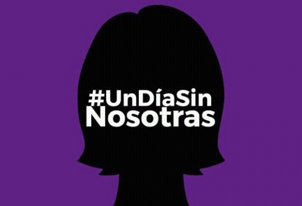
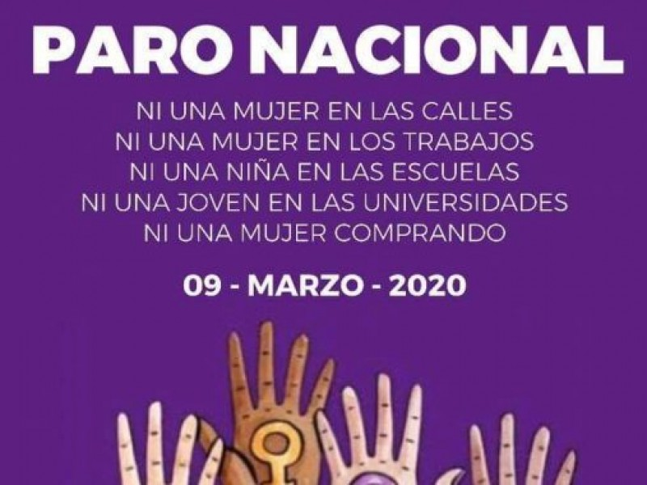

March 9th


On March 9th of 2020, all of the women in the country of Mexico stayed home. They did not leave their houses to go to work, school, university, nor shopping of any kind. Women dissapeared in the country of Mexico for a day. This was to show how Mexico would be like without women. Several metro stations were closed because most of the metro stations are run by women. If the whole country would have participated, there would have been a loss of $1370 million dollars for the national economy. Many companies joined the cause and supported the movement with a hashtag #UnDiaSinNosotras which means "A day withous us." Some companies like Walmart made sure thay their female employees would still get paid despite not showing up to work that day (New York Times).